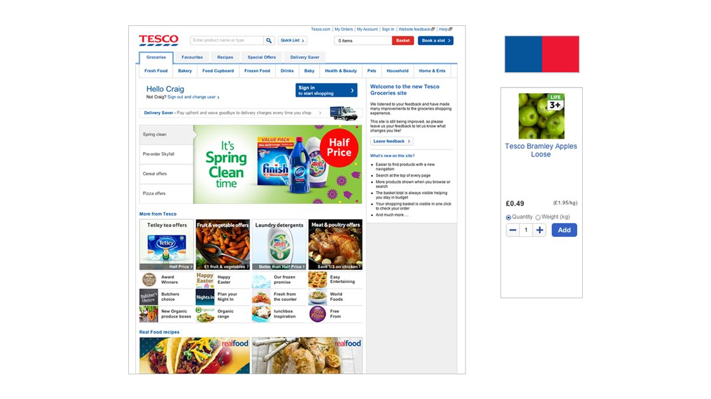
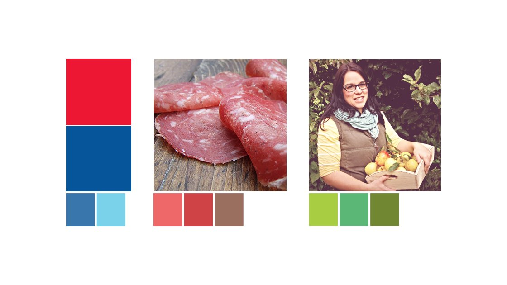
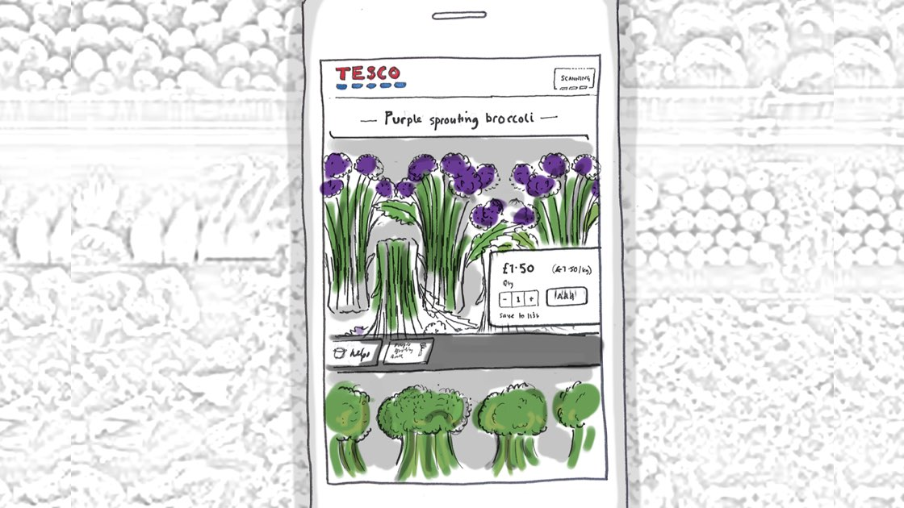
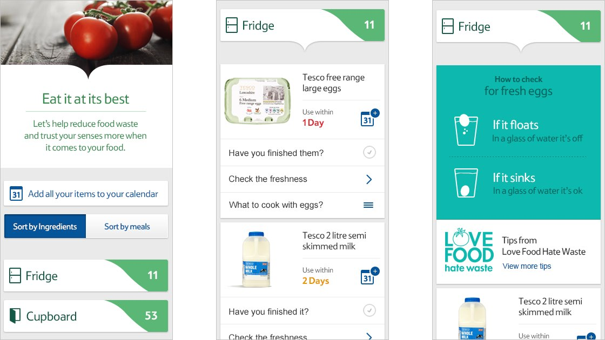
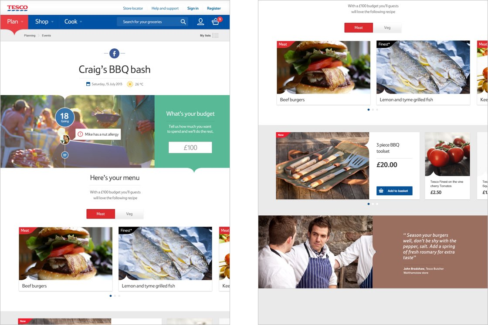
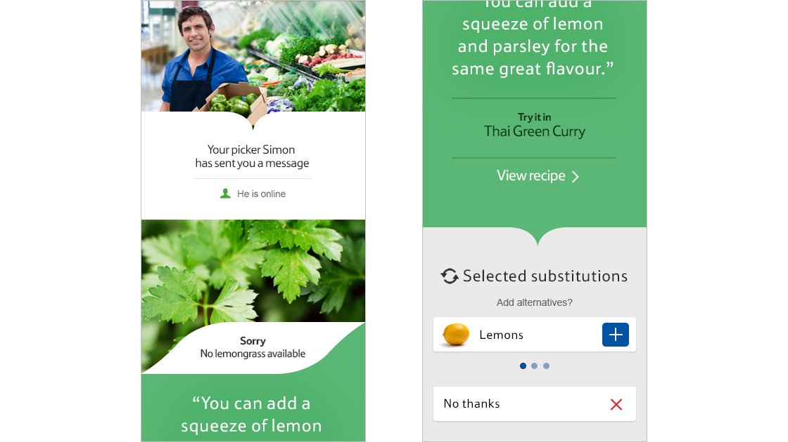
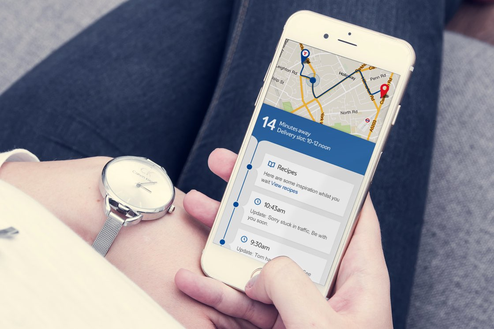

Tesco
Plan. Shop. Cook.
How Tesco could lead on service design

Overview
The project showcased how Tesco could use digital channels to make online grocery shopping a service for better living, for both existing customers and attracting new customers, through freshness, quality and service innovation.
Working collaboratively with the client and a small design led team, meant the project was researched, designed and delivered within two weeks.








